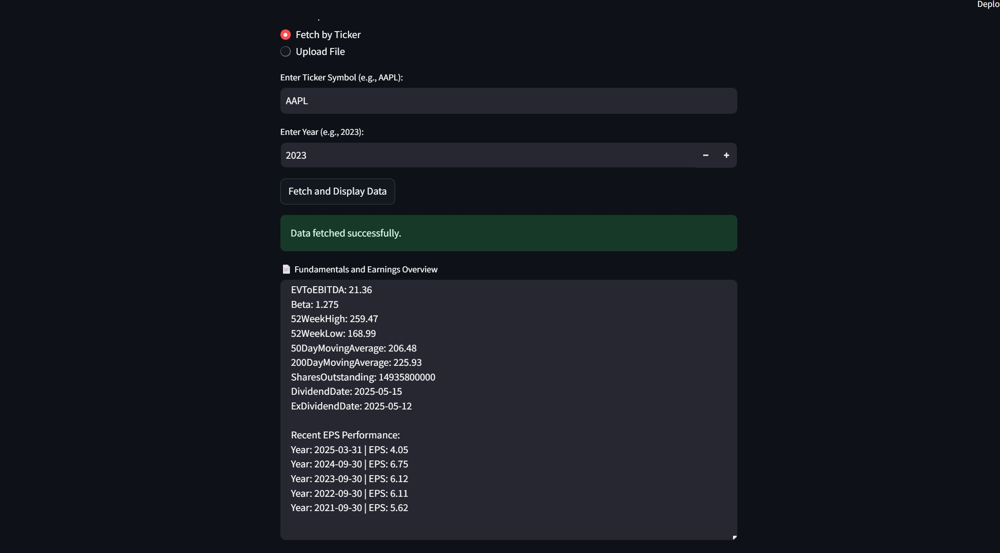

AI Investment Research Assistant
I created this platform to help investors and analysts quickly get answers from company financial reports and public data, using the latest AI technology.
Project Overview
This web app lets users analyze public company data by uploading SEC 10-K PDFs or fetching info from the Alpha Vantage API. It uses Retrieval-Augmented Generation (RAG) and transformer models to answer financial questions in simple, clear language.
Why This Matters
Financial documents are long and hard to read. My project turns them into fast, useful answers, saving users time and making investing easier for everyone—not just experts.
What It Does
- Lets users upload 10-K PDFs or get data by company ticker
- Answers plain-English questions like “What was the 2023 EPS?”
- Summarizes key info from financial reports
How It Works
- Gets data from Alpha Vantage or PDF uploads
- Breaks text into smaller pieces for smarter search (LangChain)
- Uses FAISS to find the right info fast
- Uses a Hugging Face language model to write the final answer
My Role
I built the whole system, from the backend logic to the user interface, making sure it’s easy to use and gives helpful answers.
Screenshots

Get data by typing in a company ticker and year.

Upload financial reports as PDFs for instant AI analysis.
Tech Used
- UI: Streamlit
- AI Models: Hugging Face Transformers (FLAN-T5)
- Search: Sentence Transformers + FAISS
- API: Alpha Vantage
- PDF Parsing: PyPDF2